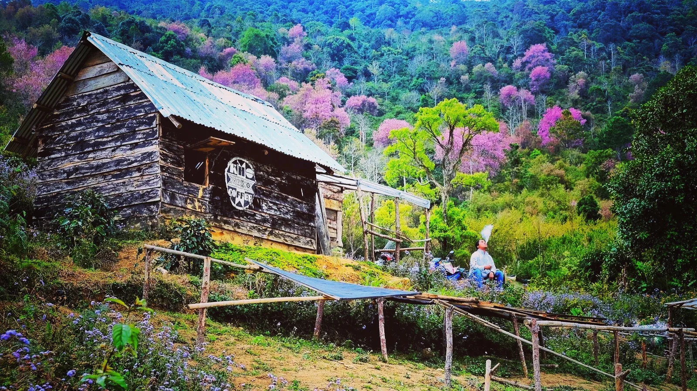
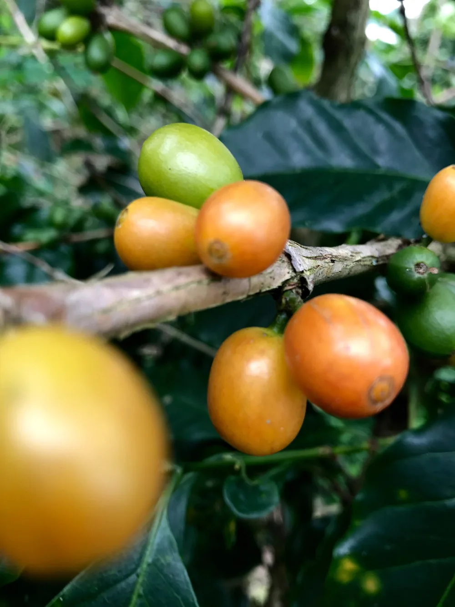
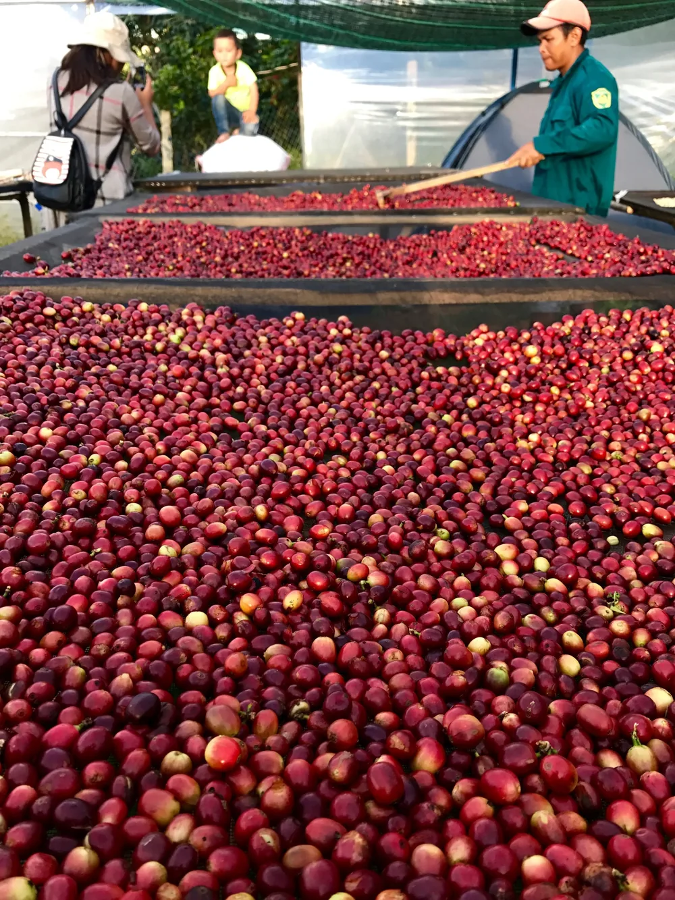
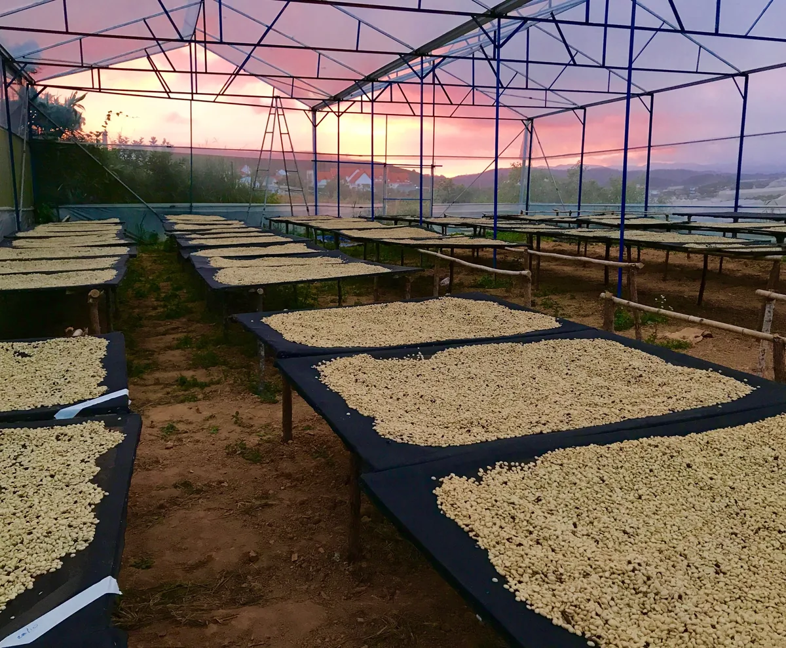
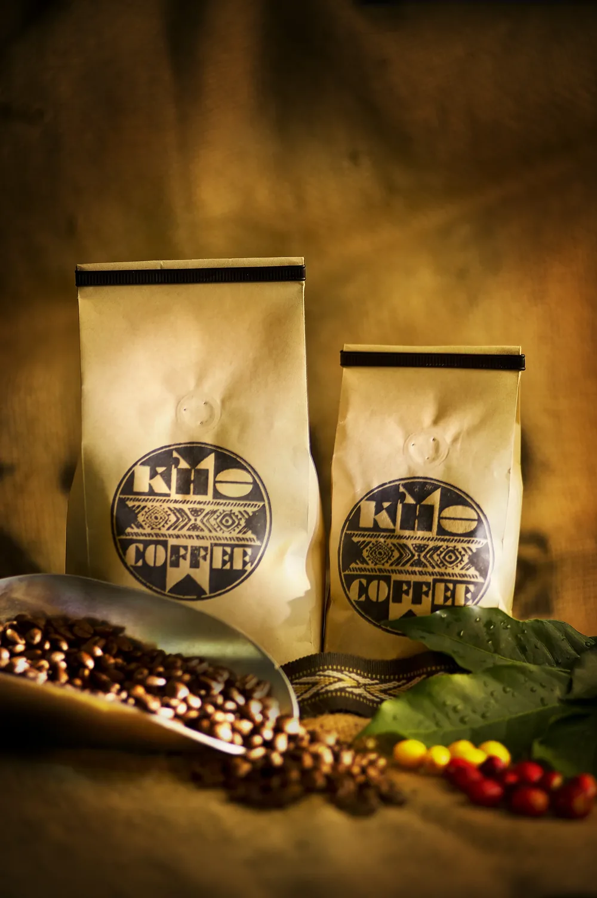
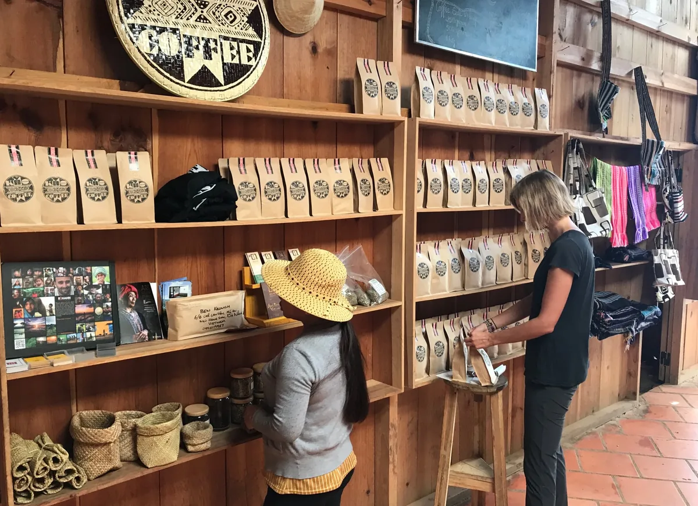
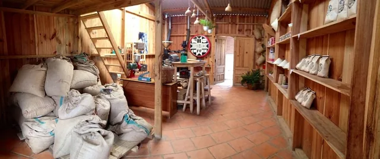

Cà phê lớn lên
cùng một vùng đất.
CÀ PHÊ CỦA NHỮNG GIA ĐÌNH K’HO
Một chút Langbiang trong buổi sáng của bạn. Arabica được trồng, chăm chút và rang ngay nơi câu chuyện bắt đầu.
Tìm vị cà phê của bạn
ĐÀ LẠT
Hạt cà phê
có quê nhà.
K’Ho Coffee là một hợp tác xã của những gia đình trồng Arabica trên núi Langbiang.

Từ giống cây được gìn giữ qua nhiều thế hệ, đến những mẻ rang ngay tại nông trại.
Thu hái, sơ chế, phơi, rang và nếm. Mỗi công đoạn đều được theo dõi tại nơi trồng, để hạt cà phê giữ trọn câu chuyện của mình.
Đọc câu chuyện của K’HoVị ngon cần
thời gian.
Ba cách sơ chế: washed, natural và honey.
Mỗi cách mở ra một sắc thái khác của hạt Arabica.



K’HO COFFEERANG TẠI NƠI TRỒNG
LANGBIANG, VIỆT NAM
Phiếu chọn cà phê
BẮT ĐẦU TỪ CÁCH BẠN PHA
Chọn cách pha thường ngày. Mình tìm mẻ rang phù hợp.
Quế · Cam chanh · Hạnh nhân
Giá tham khảo từ bảng giá K’Ho, chưa gồm VAT và phí vận chuyển. Đây là bản xem thử, không gửi đơn hàng.
Ghé vườn.
Uống một tách.
Chậm lại.
CÓ DỊP LÊN ĐÀ LẠT
Cửa hàng ngay tại nông trại. Một nơi để gặp hạt cà phê, trước khi mang nó về nhà.
Liên hệ K’Ho Coffee
